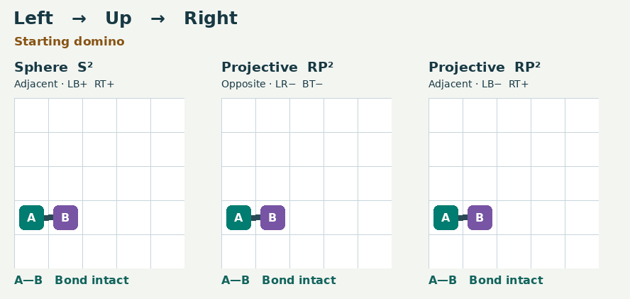
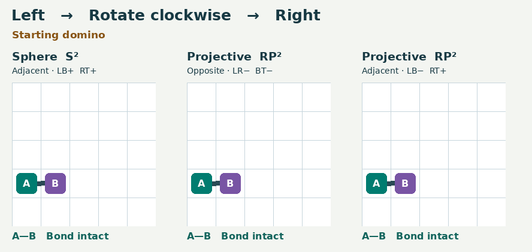
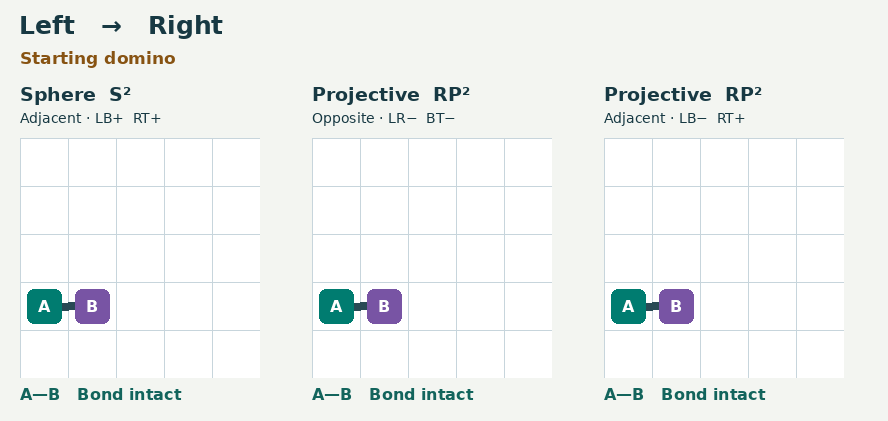
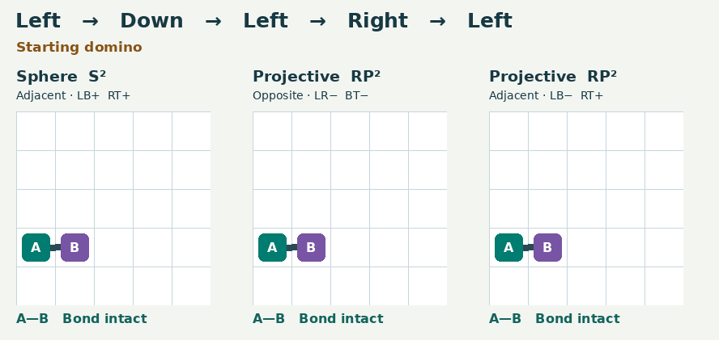

Lesson 3 · Can you come home mirrored?
Opening challenge. Two tokens start on the same cell of two boards. Each carries a red arrow pointing right and a blue arrow pointing up. You press the same five keys. Both tokens visit exactly the same cells and return home. Can one pair of arrows come home mirrored?
Place in the learning path. Follow Chapter 2’s introduction to transported frames. Allow 15–20 minutes. Use zero-based coordinates with up increasing y. A board-axis command applies to each occupied cell independently. The arrows record how a local frame crosses a seam. They do not steer the next keypress.
1 · Trace the same loop twice
Open the interactive comparison from your local checkout. Use Next step to advance both boards, Previous step to inspect the crossing again, or Reset to start over. The shared sequence runs for two loops so you can test your second-return prediction. Open the HTML file in a browser with its adjacent CSS and JavaScript files in place.
Use a 5 × 5 board. On both boards the right edge joins the top edge with matching coordinates. On board A the left edge joins the bottom with matching coordinates (+). On board B the same two edges join in reverse order (−). A is a sphere. B is a projective plane.
Start at (0,2). Predict the final directions of both arrows before reading the last two columns.
| Key | Cell on both boards | A · sphere, LB+ | B · projective plane, LB− |
|---|---|---|---|
| Start | (0,2) | red →, blue ↑ | red →, blue ↑ |
| Left | (2,0) | red ↓, blue → | red ↓, blue ← |
| Left | (1,0) | unchanged | unchanged |
| Left | (0,0) | unchanged | unchanged |
| Up | (0,1) | unchanged | unchanged |
| Up | (0,2) | red ↓, blue → | red ↓, blue ← |
Why the paths agree. The middle edge cell has index 2. Reversing the five edge indices sends 2 to 4 − 2 = 2. Exiting left enters through the bottom, so the outward direction ← becomes the inward direction ↑ on both boards. That determines the red arrow. The original blue arrow runs along the left edge. The seam sign decides whether it points right or left along the bottom. All remaining moves are interior steps, even the ones that land on boundary cells.
How to read the result. Turn from red to blue through the smaller angle. Initially this is counterclockwise. On A it is still counterclockwise. On B it is clockwise. The red arrow alone would have missed the difference in this loop.
With red and blue as the ordered columns of a matrix, the return maps are
The sphere loop rotates the frame by a quarter-turn. The projective-plane loop reflects it. An orientable surface preserves handedness around every closed loop. A nonorientable surface admits a loop that reverses handedness. Individual loops on that surface can still preserve it.
Try it. Repeat the five commands. Predict position, both arrows, and handedness separately. Answer: both positions return again. On A the arrows now point left and down, since two quarter-turns give a half-turn. On B they point right and up, since the reflection squared is the identity.
2 · Keep the surface and change the controls’ behaviour
Open the interactive control and domino comparison from your local checkout. Press Right, then Left to compare A, B and C. In the separate board C experiment, press Up and watch the two halves of the seam bond disappear.
Introduce board C, another projective plane. Pair opposite sides and reverse both edge parameters (LR−, BT−). Start at (4,1) on all three boards. Press Right, pause, then predict what Left will do.
| Board | After Right | After Left | Key that crosses straight back |
|---|---|---|---|
| A and B · right joins top | (1,4) | (0,4) | Up |
| C · right joins left | (0,3) | (4,1) | Left |
A and B share exactly the seam exercised here. B and C share the same topology. The prediction depends on the receiving edge. On C every Right move translates four columns into the columns on their right and fills the vacant left column bijectively from the right edge. Thus Right is a permutation. The same proof applies to the other three directions.
Does a permutation preserve a domino? On C put two labelled cells at (4,1) and (0,3). They touch across the seam. Press Up. Their destinations (4,2) and (0,4) are distinct, so the move succeeds. But (4,2) touches (0,2) across the seam. The original bond is gone. This is an actual loss of quotient adjacency, even though the two cells already looked far apart before the move.
Worked comparison · The same domino on A, B and C
Open the interactive domino tutorial to send the same Left, Right, Up, or Down command to all three boards. Free movement starts automatically. Use the direction buttons or press the arrow keys while the movement panel has focus. Use the Sequence dropdown to switch to any of the five replays. The clips start with two labels at (0,1) and (1,1), then use Left to bring the domino across a seam. Predict which boards keep the bond when the next action is Up, and which keep it when the next action is a clockwise quarter-turn about the first cell.
The clips show the sphere, opposite-edge projective plane, and adjacent-edge projective plane in that order. In this lesson those boards are A, C, B. The letters shown on the tiles label the two cells. Chapter 2’s two-board exercise uses 4 × 4 boards and a counterclockwise turn.
Left → Up → Right

Left → Clockwise turn → Right

Left → Right

Left → Up → Left
Left → Down → Left → Right → Left

Domino clip guide and native traces
3 · Give “worse” a denominator
Open the interactive 8 × 8 benchmark. Choose a metric to compare counts and rates on A, B and C. Then step through an atomic block on A and a successful second command that breaks a seam bond on C.
Predict which board wins each column, then reveal the table. These
independent reference counts use the documented board-axis rule on an 8
× 8 board. To compare with Explorer, convert the lesson’s
upward-positive y coordinate to the engine’s downward-positive
coordinate using y_engine = N − 1 − y_lesson. Match the
visible edge pairings and arrows before comparing moves. C matches the
documented projective-plane preset. The documented sphere preset is the
vertical mirror of A. When using that preset, reflect A’s positions and
arrows vertically and exchange Up with Down. B is the alternate
adjacent-edge construction. For each family, enumerate every distinct
in-board four-cell set connected by ordinary grid edges. Try every
cardinal command that attempts at least one seam crossing. After every
successful first command, try all four second commands.
| Gluing | Opposite key fails to restore one cell after a crossing | First command blocked | Second command blocked | Second command succeeds and loses a bond |
|---|---|---|---|---|
| A · adjacent sphere | 28/32 | 40/496 | 476/1,824 | 816/1,824 |
| B · adjacent projective plane | 32/32 | 20/496 | 462/1,904 | 912/1,904 |
| C · opposite projective plane | 0/32 | 0/496 | 0/1,984 | 840/1,984 |
The first column tests position only. A block means two labels would occupy one destination and the entire move is rejected. A lost bond means a pair of distinct cells adjacent immediately before a successful command no longer touch by any quotient edge. Each second-command denominator is four times the number of successful first commands. Rigid transport of the two-arrow marker in part 1 and independent movement of the four occupied cells here are different experiments.
Interpretation exercise. Which board would you choose if your priority were (i) never collapsing two cells onto one site, (ii) demonstrating a mirrored return, or (iii) producing more first-crossing blocks between the two adjacent boards? Answers: (i) C, by the permutation proof for every board size. (ii) B or C, with an orientation-reversing loop. (iii) A for this benchmark. The size of the first-crossing sample and the distribution of moves matter when interpreting a rate.
Why three boards suffice here. Among complete pairings of distinct sides of one square with coordinate preserved or reversed, the two sphere gluings form one square-symmetry class. The five projective-plane gluings form two classes, four adjacent and one opposite. A rotation or reflection relabels the cells and commands, so the uniformly enumerated counts agree within a class.
Teaching notes
Show A and B side by side with a shared step control. Keep the original arrows faintly visible at the home cell. Animate the token to the edge, highlight the paired edge indices, and continue inward from the receiving edge. Keep both board axes fixed. An unfolded inset can show frame transport across the seam continuously. Reveal the determinant only after the learner has judged the turn from red to blue. In part 2 draw the domino’s shared edge in both chart locations and remove its highlight when the bond breaks. For blocked moves in part 3, preview both proposed arrivals at the same site and leave every occupied cell at its original location.
Exit question. A player reports, “I returned to the starting square, but something flipped.” What evidence would distinguish reversed handedness, a rotated frame, and a broken piece? Record the ordered arrow pair before and after the loop. Its determinant sign detects a handedness change, and its full matrix measures the transformation. For the piece, additionally record the labelled cells and compare their quotient-neighbour pairs. The starting square alone answers none of those questions.